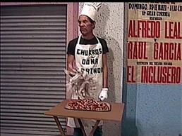
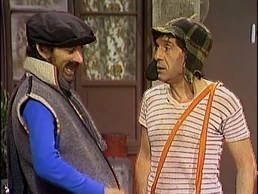
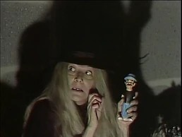
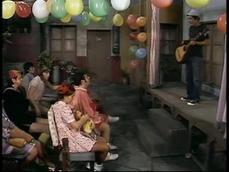
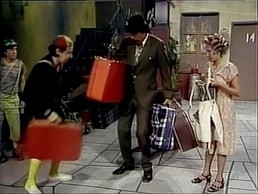

Três episódios em que o Seu Madruga tenta vender churros para pagar o aluguel.
Assistir episódios

Quando Chaves pensam que a Dona Clotilde fez sabão do Seu Madruga.
Assistir episódio 1 Assistir episódio 2
Um clássico com quatro partes, mostrando os talentos (e desastres) da vila.
Assistir episódio completo
A famosa saga dos três epidódios onde a turma viaja a acapulco, marcante pela união do elenco fora do estúdio e a música "Boa Noite Vizinhança".
Assistir episódio completo